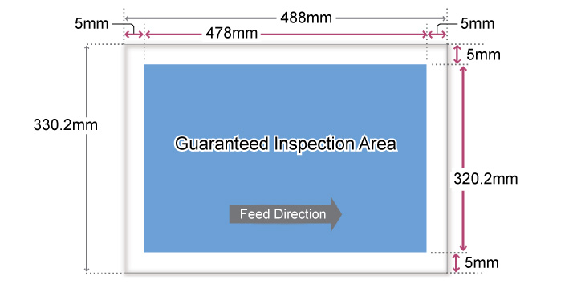
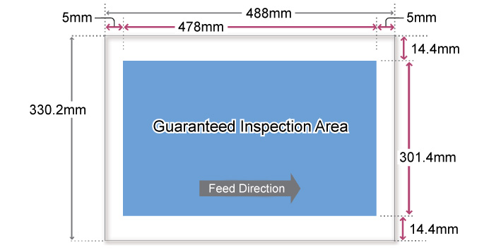

6.2.9.9 SMG Supported 纸张 Sizes 
纸张 sizes 该 可以 inspected
高度: 100-330.2 (mm)
宽度: 148-488 (mm)

宽度: 纸张尺寸 超过 488.1 mm 可以 inspected, 但是 检查 results 不是 guaranteed.
Areas 该 无法 be inspected
Jobs 用于 哪个 [图像质量] > [Stability] in Job Properties is disabled (浓度 Variation/Register 移位 关闭/脱离)
纸张 前面/后面 边缘: 5 mm
纸张 顶部/底部 边缘: 5 mm
Jobs 用于 哪个 [图像质量] > [Stability] in Job Properties is enabled (浓度 Variation/Register 移位 ON)
纸张 前面/后面 边缘: 5 mm
纸张 顶部/底部 边缘: 11.5 mm
Guaranteed 检查 Area
Jobs 用于 哪个 [图像质量] > [Stability] in Job Properties is disabled (浓度 Variation/Register 移位 关闭/脱离)

(图 1) ism620004
Jobs 用于 哪个 [图像质量] > [Stability] in Job Properties is enabled (浓度 Variation/Register 移位 ON)

(图 2) ism 620005
纸张 顶部/底部 边缘 of 11.5-14.4 mm (2.9 mm area) 检查 results 不是 guaranteed.
横向: 少于 279 mm 和 纵向: 少于 210 mm 无法 be inspected.